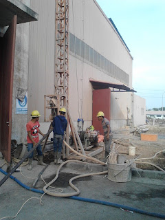
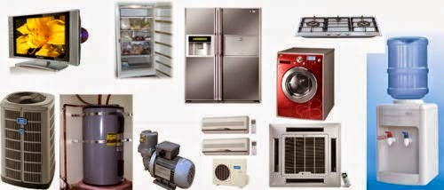

Jual Floor Deck Harga Murah di Batu ☎ ??? (www.dis.or.id)
Dikarenakan banyak keunggulan yang mengalahkan kayu sebagai rangka konvensional. Selain atap, galvalum juga berperan sebagai kerangka atap yang gunanya adalah untuk menopang beratnya atap. Berat atap yang saya maksud disini tidaklah seberapa, karena berat yang tertopang pada galvalum tersebut sudah tersalurkan dengan baik sehingga tidak akan membebani atap maupun galvalum. Maka beberapa penjabaran kami dapat anda simak.
Distributor & Supplier Floor Deck (Bondex)

Jika dibandingkan dengan triplek maupun bahan lain yang digunakan untuk membuat sebuah dek, ada beberapa kelebihan Floor Deck yang tidak dimiliki oleh beberapa bahan lain tersebut. Produk material ini berfungsi untuk menggantikan fungsi bekisting pada saat melakukan pengecoran plat pada lantai. Selain itu, Floor Deck ini bisa dipasang pada konstruksi baja ataupun beton serta didukung dengan data perencanaan. Sedangkan untuk panjang dan juga lebarnya ada beberapa variasi.
Jika anda ingin mengetahui lebih lanjut mengenai floor deck Batu ini, anda bisa langsung mengunjungi dis.or.id. Anda juga bisa langsung memesannya ataupun hanya ingin mengetahui detail harga yang di patok dari floor deck Batu tersesbut. Pastinya dengan harga yang sangat terjangkau dan dengan mutu terbaik.
Info Pemesanan Selengkapnya
Google Maps: https://www.google.com/maps/d/u/0/viewer?mid=1vSGA7eD7ctB-ierGsro9yf6LdDAQHeLS&ll=-6.2537250295094555%2C106.82745&z=15
Note: https://www.facebook.com/notes/distributor-of-industrial-supply/kontraktor-jasa-floor-hardener/1783168878649658/
Event: https://www.facebook.com/events/534395173592364/
Portfolio Produk: https://www.facebook.com/1681607345472479/photos/?tab=album&album_id=1685055588460988
Distributor & Supplier Besi Beton

Apa Cepetan merupakan besi yang dapat diaplikasikan pada suatu gedung karena bahan ini lebih mudah didapat dan juga harganya pun lebih ekonomis dibandingkan dengan penggunaan material lainnya. Besi beton dapat menjadi pondasi pada bangunan yang kuat sehingga membuat bangunan yang aplikasikan besi ini dapat kokoh dan tahan lama. Definisi dari besi beton adalah sebuah besi berupa material yang umumnya digunakan sebagai konstruksi.
Besi beton terkenal sebagai bentuk besi yang memiliki kekuatan besar dan tahan terhadap berbagai guncangan dan tekanan.
Salah satu cara untuk mendapatkannya adalah dengan membeli di dis.or.id. Anda bisa langsung mengunjungi dis.or.id. Kualitas dan mutunya pun telah terjamin.
Distributor & Supplier Steel Grating

Plat Grating terbaru memiliki kualitas terbaik yang bisa digunakan untuk sarana pembangunan pada industri hingga pertambangan. Saat ini, Plat Grating bisa di dapatkan dengan mudah. Umumnya, Grating digunakan untuk kolam renang. Steel Grating yang terbuat dari baja berkualitas ini dilapisi dengan Galvanis. Permukaan atas grating ini bergerigi sehingga saat di aplikasi pada bangunan tidak terasa licin. Terbuat dari bahan yang hot deep galvanis sehingga grating tidak mudah berkarat meskipun terkena air hujan di setiap harinya. Pada umumnya, Grating hanya memiliki 2 type, yaitu serrated atau bergerigi dan plain atau polos.
Anda bisa mendapatkan steel grating berkualitas dengan mengungjungi dis.or.id. Terdapat banyak jenis steel grating yang di jual sehingg anda dapat dengan mudah memilih sesuai dengan kebutuhan.
Distributor & Supplier Pipa (Hitam/Gas, Galvanis)

Pipa hitam gas galvanis pemanfaatannya sangat berbeda dengan jenis pipa pada umumnya, banyak sekali manfaat yang diperoleh dengan mengaplikasikan jenis pipa ini. Pipa hitam banyak sekali diaplikasikan pada area pertambangan minyak gas karena ia memiliki struktur yang 3 kali lebih kuat dari jenis pipa biasa. Pipa hitam galvanis telah di produksi khusus untuk kebutuhan pertambangan minyak dan gas, maka tak heran bila banyak orang yang menyebut pipa hitam adalah pipa gas. Karena sudah terlapisi dengan stainless steel pipa ini dapat diaplikasikan pada segala kondisi cuaca di Indonesia. Anda bisa memesan pipa hitam ini dari ukuran ½ inci sampai 40 inci. Hubungi segera kontak yang telah tersedia untuk informasi lebih detail, kami menerima segala kebutuhan besi baja anda kapanpun dan dimanapun.
Distributor & Supplier Kawat Bronjong/Gabion

Kawat bronjong kini dapat sering ditemui untuk berbagai kebutuhan pembanguna. Umumnya, kawat ini dipasang di tebing yang rawan sekali mengalami longsor, terutama ketika musim hujan tiba. Ini berbentuk seperti anyaman yang terbuat dari kawat biasa. Kawat ini sangat bisa diandalkan sebagai pencegah erosi. Maka dari itu, kekuatannya untuk menahan tebing tinggi yang mungkin bisa longsor tidak perlu dipertanyakan lagi. Kawat bronjong biasa dilapis oleh galvanis yaitu suatu lapisan anti karat agar kawat dapat tahan lama dan tidak gampang berkarat. Ini bisa Anda lihat di pinggir-pinggir pantai.
Untuk itu, kini kawat bronjong sangat banyak dibutuhkan pada segal bidang. Disana anda bisa mendapatka kawat dengan harga yang cukup terjangkau dengan kualitas terbaik yang dimilikinya. Sehhingga, anda bisa leluasa memilih kawat bronjong mana yang susuai dengan yang anda butuhkan.
Distributor & Supplier WF H-beam

Saat ini, banyak orang yang ingin mencari jenis besi WF, terlebih ini zaman yang serba modern dan praktis. untuk harganya, besi WF tergolong cukup terjangkau dan tidak terlampau mahal. selain itu, besi ini ternyata memiliki kualitas yang terjamin sehingga tidak diragukan lagi.
Jika membawanya Anda juga tidak perlu khawatir keberatan karena besi ini lebih ringan dan praktis. Besi ini tergolong jenis besi yang ringan disertai dengan komponen yang sesuai sehingga Anda tidak perlu keberatan saat memakai jenis besi ini.
Harga yang murah tentunya di dis.or.id juga menjamin kualitas dan mutu terbaiknya juga. Terdapat berbagai ukuran dari besi WF yang bisa anda jadikan pilihan sesuai dengan kebutuhan anda. Pastinya dengan harga yang sangat terjangkau.
Distributor & Supplier Expanded Metal
.JPG)
Expanded metal atau yang dikenal juga dengan grid mesh ini adalah lembaran baja berbentuk jala dengan lubang-lubang yang homogen dan sangat cocok jika digunakan untuk berbagai aplikasi selain dari Pagar BRC. Umumnya penggunaan dari Expended Metal ini adalah untuk walkway atau catwalk, anak tangga pada tower serta banyak juga digunakan di dermaga/konstruksi lepas pantai/pertambangan. Sedangkan untuk keunggulannya sendiri adalah memiliki bentuk yang indah dan juga homogen, lebih vareatif dalam hal pengaplikasiannya, relatif lebih ringan, dan lebih mudah dipasang. Selain itu, Expended Metal juga dikenal mampu menahan beban berat, memiliki permukaan yang anti slip/tidak licin, dan juga dikenal tahan karat untuk material yang dari alumunium.
Disana terdapat berbagai informasi mengenai expanded metal yang anda butuhkan. Kunjungi dis.or.id untuk memesan expanded metal dengan harga yang murah serta mutu yang terjamin.
Distributor & Supplier Plat (Hitam, Kapal, Bordes, Strip)

Plat yang satu ini mungkin yang paling banyak kita jumpai, bukan sebagai plat bahan bangunan namun sering digunakan sebagai plat lantai pabrik, kendaraan dan berbagai fungsi lainnya. Plat besi bordes ini saat ini lebih banyak digunakan sebagai bahan pembuatan mobil, terutama mobil pengangkut seperti truk, pick up, dan lain sebagai nya.
Oleh Karena itu dis.or.id dapat menjual plat besi yang murah dengan kualitas yang bagus. Disana terdapat berbagai macam plat yang anda butuhkan dan pastinya dengan harga yang sangat terjangkau. Anda pastinya tidak akan rugi jika membeli plat besi dengan banyak varian dan jenis yang disediakan disana.
Distributor & Supplier Atap Galvalum

Galvalum memiliki banyak kelbihan sehingga dia lebih banyak digunakan jika dibandingkan dengan kayu.
Primadona galvalum ini dinilai lebih efektif jika dibandingkan dengan galvanis. Banyak sekali jenis atap galvalum yang bisa kita dapatkan di pasaran. Saat proses pemasangan rangka pada bagian atap.
Bahkan, setiap rumah khususnya di perumahan sudah banyak yang menggunakan atap galvalum sebagai teras khusus ntuk mobilnya. Namun, banyak anggapan yang mengatakan bahwa memasang galvalum akan membuat rumah akan terasa panas dan berisik. Harus diakui bahwa atap seng yang digunakan dapat menyebabkan rumah terasa panas. Bahannya yang terkomposisi dengan baik membuatnya tidak berisik bahkan ketika hujan, tahan lama dan anti karat. Seng tidak dapat memantulkan panas dari matahari. Atap galvalum mempunyai banyak tipe, jenis dan ukuran yang sesuai dengan ukuran yang dapat anda pilih.
Distributor & Supplier Atap Lengkung

Dewasa ini, atap lengkung sangat dibutuhkan bagi berbagai macam jenis bangunan. Baik atap tersebut terbuat dari besi, aluminium, galvalum, zincalum kayu dsb. Terkadang atap lengkung ini juga sangat berguna bila dipakai dengan hal demikian.
Sifat fleksibelnya dan modelnya yang unik membuatnya dapat dijadikan atap berbagai bangunan. Salah satu jenis atap galvalum yang sekarang sedang populer adalah atap lengkung. Salah satunya juga harus kuat menahan derasnya air hujan.
Maka sudah pasti bahwa kualitas atap tersebut sangat diragukan. Nah, atap lengkung inilah yang berjasa membuat stadion tersebut terlihat megah. Anda sudah berada di tempat yang tepat.
Distributor & Supplier Truss Canal C
Anda pasti mengetahui bahwa truss atau besi kanal c ini tahan terhadap rayap. Kedua istilah tersebut merujuk pada sebuah benda yang sama. Cara pemasangannya besi kanal c dengan reng galvalum juga tidak boleh sembarangan. Jadi fungsi nya sebagai reng atau penyangga genteng. Satu untuk rangka dan satunya lagi adalah untuk atap. Bila anda mencari besi kanal c dengan kualitas tinggi namun harga terjangkau maka anda sudah datang ke tempat yang tepat.
Distributor & Supplier Hollow Galvalum

Seperti yang telah saya tuliskan di beberapa artikel, salah satu fungsi dari Hollow Galvalum adalah sebagai rangka plafon atap rumah. Namun dominasi bahan sebagian besar menggunakan alumunium dengan presetase rata rata 55%.
Bila anda ingin membeli Hollow galvalum dengan harga terjangkau dan tentunya kualitas terjamin, simak ulasan kami ini. Untuk anda yang sedang membutuhkan hollow galvalum dalam jumlah kecil ataupun partai besar, dan sedang mencari hollow galvalum berkualitas harga murah. Memang selain memiliki kekuatan yang luar biasa, juga rangka plafon jenis ini memiliki ketahanan yang bisa bertahan hingga berpuluh puluh tahun. Studi penelitian telah mengungkapkan bahwa kerangkan plafon menggunakan jenis hollow ini bisa bertahan puluhan tahun. Namun sayangnya masih banyak pekerja bangunan yang masih terkendala dari segi pemasangan nya. Tunggu apa lagi, silahkan hubungi customer service kami untuk melakukan pemesanan hollow galvalum.
Distributor & Supplier Seng Gelombang

Seiring perkembangan jaman, seng gelombang mengalami peningkatan dari waktu ke waktu. Sekarang ini telah tersedia atap bangunan berbentuk seng gelombang yang memiliki banyak keunggulan, baik dilihat dari fungsi maupun harga jual pasarnya. Andapun wajib memperhatikan bagaimana atap bagian bangunan tersebut apakah berkualitas ataukah tidak, atap dengan kualitas rendah akan beresiko kerusakan maupun kebocoran yang pasti merugikan seisi bangunan ruangan tersebut. Seng gelombang memiliki banyak keunggulan dari berbagai sisi. Walaupun begitu, harga jual seng gelombang warna masih ekonomis dan pas dikantung untuk anda yang ingin menghemat pengeluaran pembangunan.
Dengan seng gelombang kecil, anda tak perlu lagi repot memotong ukuran asli seng gelombang dan menata seng gelombang dengan ukuran yang pas pada atap bangunan. Meskipun mahal, namun kami yakin bahwa anda tidak akan menyesal dengan berbagai jenis seng gelombang yang tersedia.
Distributor & Supplier Plat Seng

Selain itu manfaat dan kelebihan yang dimiliki jauh lebih banyak dari seng biasa.
Hal ini tidak lain dikarenakan plat galvanis lembaran memiliki ukuran yang lebih luas dan bermeter meter. Bagaimana perihal harganya? Bila anda bandingkan maka jarak harga plat galvanis 3mm akan berbeda jauh dengan 1mm, tentu hal ini wajar karena salah satu penentu harga dari sebuah plat adalah ukuran ketebalannya.
Oleh karena itu, peran atap pada sebuah rumah sangatlah penting.
Distributor & Supplier Genteng Metal

Genteng metal adalah salah satu jenis genteng yang berbahan dasar Zincalume, bahan ini merupakan salah satu jenis bahan yang digunakan pada baja ringan. Penggunaan genteng metal memiliki kelebihan seperti tidak adanya biaya perawatan karena genteng tidak akan berkarat, jamur ataupun pecah. Kami siap melayani pembelian dalam jumlah kecil ataupaun partai besar untuk tiap tiap brand tersebut. Genteng metal pasir adalah genteng yang memiliki bobot yang ringan tetapi memilki kekuatan yang tinggi sehingga genteng metal pasir adalah genteng yang memilki kualitas yang terbaik dibandingkan dengan genteng metal lainnya. Anda cukup menghubungi contact person yang sudah tertera di setiap industri yang anda butuhkan.
Distributor & Supplier Besi Wiremesh

Besi lonjor yang disusun rapi hingga membentuk anyaman adalah besi wiremesh. Banyak orang yang menganggap wiremesh ini dengan sebutan besi anyam. Struktur anyam dari besi wiremesh sendiri juga bermacam-macam, anda bisa sesuaikan dengan kebutuhan apakah struktur anyam kotak atau yang jajar genjang. Setiap jenis bentuk wiremesh dimanfaatkan untuk kebutuhan yang berbeda-beda, tergantung dari anda memilih jenis anyam kotak atau jajar genjang. Besi wiremesh terdiri dengan berbagai macam ukuran ketebalan, ketebalan 8 – 10 digunakan untuk bangunan bertingkat. Sementara ketebalan 4 – 6 dimanfaatkan untuk bangunan biasa. Dibanding jenis besi lain, kekuatan besi wiremesh lah yang terbaik, sebab ia diproduksi dengan sistem las otomatis. Bagi anda yang membutuhkan besi wiremesh, kini dapat memesan pada kami!
Distributor & Supplier Pagar BRC

Pagar beton merupakan pagar yang dibuat dari material beton dimana ia memiliki diameter ketebalan 5 mm – 8 mm, tentu saja anda bisa memesan kebutuhan pagar BRC ini sesuai dengan kebutuhan. Potongan besi berdiameter tersebut kemudian digabungkan menjadi satu menggunakan mesin las wiremesh. Pagar BRC termasuk dalam kategori pagar yang siap pasang untuk melindungi berbagai bentuk bangunan anda. Untuk melindungi sebuah bangunan, kekuatan pagar BRC sangat dapat diandalkan karena ia diproduksi dengan baja bertegangan tinggi dengan tegangan ijin 2900 kg/cm2, kekuatannya bahkan 2,5 kali lipat dibanding jenis besi biasa. 5 kali dari kekuatan besi biasa.Dan juga pagar BRC memiliki lapisan galvanis sehingga ia daya tahan terhadap karat > 10 tahun sehingga sangat cocok diaplikasikan pada idaerah yang korosif seperti tepi pantai, daerah belerang, atau dekat pabrik.
Distributor & Supplier Kawat Loket, Kawat Harmonika

Adalagi jenis kawat yang cocok diaplikasikan sebagai penyekat maupun kawat pagar, yakni kawat loket harmonika ini. Tak hanya sampai disitu, kebutuhan akan kawat loket harmonika mencakup berbagai bidang industri, baik keperluan rumahan sampai industri. Apalagi jenis kawat galvanis yang digunakan tahan karat dan korosi, sangat awet bila anda bandingkan dengan jenis kawat biasa. Jika anda membutuhkan kawat loket harmonika ini, tentu saja kami telah mempersiapkan produk ini untuk anda, telah tersedia kawat loket dengan ukuran bermacam-macam dari diameter 1,5 mm sampai 4 mm dan ukuran lubang 20 mm sampai 70 mm. Untuk informasi selengkapnya, anda dapat menghubungi kami, terlah tersedia kawat loket harmonika dengan diameter 1,5 mm – 4 mm, disertai lubang 20 mm sampai 70 mm tergantung dengan kebutuhan anda. Kami dapat menerima segala kebutuhan kawat harmonika anda dengan maksimal ukuran lebar sampai 3 meter.
Distributor & Supplier CNP & UNP

Besi UNP / besi kanal merupakan besi yang memiliki bentuk lengkung seperti huruf U yang banyak diaplikasikan untuk sambungan maupun dudukan atap. Besi UNP sebenarnya memiliki spesifikasi yang hampir sama dengan wide flange, hanya saja besi UNP mudah menekuk sehingga sangat jarang digunakan sebagai kolom bangunan. Besi yang sedikit lebih mirip dengan besi UNP adalah besi CNP, dimana pengaplikasian pada besi ini sendiri adalah pada cladding atau gording. Banyak orang yang menyebut besi CNP ini sebagai profil C karena bentuknya melengkung seperti huruf C, meskipun begitu besi UNP dan CNP adalah material konstruksi yang berbeda. Bagi anda yang berminat menggunakan besi CNP tentu sangat bersyukur, karena besi ini sangat fleksibel dan ia bisa dimodifikasi dari plat koil dengan teknik cutting.
Distributor & Supplier Besi Siku

Dalam dunia konstruksi, salah satu material yang cukup penting dan tidak boleh dilupakan adalah besi siku. Besi siku dibuat dengan bentuk standar yang telah disesuaikan berdasarkan kebutuhan penggunanya, tak heran bila ia masuk kategori besi penyangga yang dapat diandalkan. Bentuk dari besi siku sendiri adalah membentuk dua sisi tegak yang lurus, untuk sudut berhadapannya sendiri tergantung dengan spesifikasi kebutuhan anda. Untuk kebutuhan material besi siku selengkapnya anda dapat menghubungi kami! Kami menawarkan produk besi siku yang kuat dengan berbagai ukuran. Produk besi siku yang kami tawarkan cocok untuk beragam keperluan, baik rumahan, konstruksi, industri dan sebagainya. Butuh informasi lebih lengkap lagi? Kunjungi saja situs resmi kami di www.dis.or.id
Distributor & Supplier Hollow (Hitam, Galvanil, Galvanis)

Dengan menggunakan material ini pembangunan konstruksi juga bisa selesai lebih cepat sehingga meminimalkan upah pekerja. Dis.or.id pun telah menyediakan produk besi hollow hitam galvanis ini untuk dapat anda pesan langsung! Tersedia ukuran besi hollow 40 x 40 x 2 mm x 6 Meter, 50 x 50 x 3 mm x 6 Meter hingga ukuran 150 x 150 x 5 mm x 6 meter dan masih banyak lagi. Anda bisa menghubungi kontak yang telah tersedia untuk informasi produk lebih detail. Anda dapat menghubungi kontak kami untuk melakukan perhitungan kebutuhan hollow hitam tersebut. Hubungi kami untuk lakukan konsultasi kebutuhan besi hollow dan panjang yang dibutuhkan. Bagi anda yang membutuhkan besi ini, kami dapat membantu anda untuk menentukan ukuran besi yang diperlukan dengan menghubungi kontak kami!
Distributor & Supplier Pipa Pancang

Sebagai salah satu konstruksi bangunan, tentu saja pipa pancang sudah cukup di kenal. Sebagai sebuah konstruksi bangunan, tentu saja hal yang satu ini tidak asing lagi. Terutama bagi Anda yang sedang membangun proyek di atas permukaan laut, tentu saja ini akan sangat membantu. Tidak dapat di pungkiri lagi, fungsi pipa pancang ini sangatlah penting. Jika saat ini Anda salah satu yang membutuhkan pipa pancang, tidak perlu khawatir karena pipa ini akan di dapatkan dengan sangat mudah. apalagi mengingat banyaknya distributor yang melayani termasuk DIS. Di sini Anda akan mendapatkan pipa pancang berkualitas yang siap di gunakan. Bukan hanya kualitas bahannya saja yang bagus tetapi juga untuk pembuatannya. Dengan begini, maka dalam penggunannya, pipa pancang juga bisa di aplikasikan secara maksimal.
Jasa Pondasi Bor (Strouss/Borepile)

Ketika melakukan proyek pembangunan rumah sendiri, kualitas yang baik hingga dalam hal pengeboran pondasi pun akan menjadi hal yang di harapkan. Nah, jika Anda bingung terkait hal itu, kini ada banyak jasa yang bisa menjadi jalan keluar Anda dalam pelayanan pondasi bor. Bahkan di Indonesia ini pun juga telah tersebar di mana-mana. untuk kualitasnya pun tidak perlu di pertanyakan lagi karena dengan jasa profesional yang lebih berpengalaman ini, pengeboran akan semakin terjamin. Dalam prosesnya, pengeboran ini akan menimbulkan suara bising karena mesinnya yang sedang bekerja. Mengenal lebih jauh tentang pondasi bor, sebenarnya ada dua jenis pengeboran di sini, yakni pengeboran manual dan mesin. Untuk masalah kualitas hasilnya pun sama saja jadi tidak perlu khawatir. sedangkan jika di lihat dari segi kualitas, sebenarnya kedua jenis ini sama-sama bagus.
Distributor & Supplier Genset (New/Second)

Untuk genset atau singkatan dari generator set ini, pasti juga sudah banyak di kenali. Biasanya penjualan genset ini bisa berupa genset baru atau bekas.
Dalam hal ini perlu di ketahui bahwa harga genset memang cukup tinggi. Namun yang membelinya dalam kondisi baru pun juga banyak untuk penggunaan lebih maksimal.
Distributor & Supplier UPS

Kalau menyebut UPS, mungkin akan banyak yang bertanya-tanya sebenarnya apa sih barang yang satu ini. Hanya saja, yang tidak mengetahui nya pu juga cukup banyak. Dalam hal inI tentu saja akan sangat penting untuk memilikinya. UPS sendiri secara umum sebenarnya cukup penting untuk di miliki. UPS ini terdiri dari beberapa jenis. Bukan hanya kualitas spesifikasi yang berbeda, akan tetapi juga kapasitas listrik yang bisa di simpan. Karena itulah ketika Anda membelinya silahkan menyesuaikan terlebih dahulu seberapa besar kapasitas penampungan listrik yang di butuhkan. Sedangkan untuk pembeliannya, Anda bisa mendapatkan barang di DIS.
Distributor & Supplier Forklift (Second)

Di dunia industri, tentu saja penggunaan forklif juga tidaklah asing. Oleh karena itu, banyak penjualannya di mana-mana. Sedangkan dalam pembeliannya, bisa memilih baik yang baru ataupun yang bekas. Dengan bahan yang terjamin tersebut, tentu saja tujuan penggunaan forklif ini akan semakin memudahkan setiap aktifitas di industri Anda. Nah, dengan kualitas yang bagus ini, maka forklif akan membuat aktivitas industri Anda menjadi lebih mudah dalam berbagai hal. Jika sudah mengetahui kualitasnya yang terjamin tersebut, tentu saja segala aktifitas industri akan menjadi semakin mudah lagi.
Jasa Pembuatan Moulding Inject

Bagi Anda yang sedang bingung membuat moulding inject, jangan khawatir karena disini pun tersedia penawaran jasa untuk membuatnya. Jasa tersebut akan selalu siap membantu Anda. Tidak hanya terbatas pada kuantitas, akan tetapi, juga kualitas moulding inject ini sangatlah terjamin mutunya. Termasuk jika Anda sedang bingung akan ide, di sini pun ada beberapa pilihan yang bisa menjadi inspirasi. Dengan demikian pencetakan plastik ini bisa tepat sasaran.
Jasa Pembuatan Sparepart Mesin Produksi / Alat Berat

Dalam setiap proyek pembangunan, adanya alat berat atau sparepart tentu bukanlah hal yang asing pula. Apalagi mengingat bahwa sparepart ini sangat penting sehingga pembuatannya pun memerlukan perhatian yang tinggi. Apalagi mengingat dukungan tenaga profesional yang di sediakan sehingga sparepart Anda akan lebih aman. Pembuatan alat berat ini memang tidak bisa sembarangan, bisa jadi ketikan di buat dengan sembarangan dan ada kesalahan yang cukup fatal, akan membahayakan bagi para pekerja. Karena jika ada kesalahan sedikit saja, bisa jadi akan berakibat fatal dan membahayakan penggunanya. Semakin baik spesifikasi nya, tentu akan semakin mahal.
Jasa Service Elektronik (Kompor Gas, Dispenser, Mesin Cuci)

Service elektronik, kini sudah banyak di temui. mengimbangi akan hal itu, jasa service pun juga kian menyebar di mana-mana. Industri DIS sendiri juga menyediakan jasa sedemikian rupa. Nah, apa pun barang yang perlu di perbaiki, kini akan kembali berfungsi seperti semula. Selain untuk perbaikan, Anda pun bisa juga hanya melakukan pengecekan tanpa keluhan sebagaimana service pada umumnya. Hanya saja kebanyakan orang memang melakukan service elektronik saat ada keluhan yang di rasakan saja.
Sudahkah anda mengetahui arti penting dari sebuah komponen bernama atap? Keberadannya amat penting bukan? Bahkan bisa disebut kebutuhan primer setiap bangunan. Ada pula bangunan yang tak beratap dan hanya menjadi pondasi. Tak terkecuali berbagai jenis atap yang sudah saya jabarkan diatas. Seperti yang saya jabarkan diatas fungsi atap sudah tidak terbantahkan dan tidak dapat digantikan lagi. Terima kasih, semoga artikel tersebut bermanfaat. Dapatkan pula info menarik tentang bahan-bahan bangunan yang anda cari. Maka, dengan senang hati kami akan membantu anda.